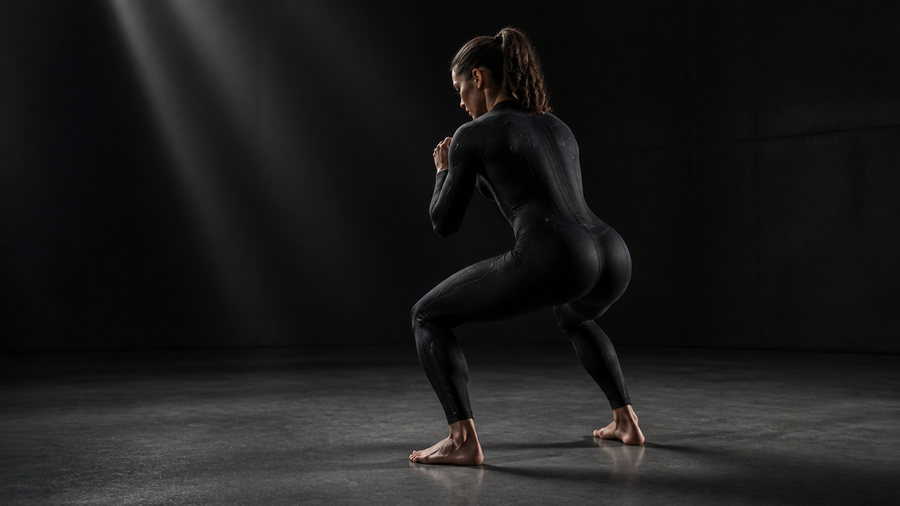

Sense the shape of a rep.
Fabric stretch sensors are designed to turn the way a garment moves with your body into a rich motion signal.

A strength coach, built into what you wear.
Smart compression training wear designed to notice the small changes that turn a good rep into a risky one.
See the systemThe missed moment
Fatigue does not announce itself. It moves your depth, your balance, your brace—one small change at a time. Most training technology tells you what happened after the workout.
Demson is being built for the moment that still matters: while you are moving.
Motion, made legible
Movement is more than a number. It is a sequence, a load, a pattern—and a chance to respond before the next rep.
The Demson system
We are developing a textile sensing system that begins where motion begins: in the fabric itself.
 Sensor pathways
Compression architecture
Movement zones
Sensor pathways
Compression architecture
Movement zones
Fabric stretch sensors are designed to turn the way a garment moves with your body into a rich motion signal.
Our coaching layer is being developed to recognize the movement patterns that matter under load, not just count the work.
The goal: concise feedback through your earbuds while a set is happening—not another report to read later.
A different kind of wearable
Camera systems ask you to make space for them. Traditional sensors add more things to wear. Demson is exploring a different answer: movement sensing integrated into compression apparel from the start.

Built around the lifter
Your training should not require a camera in the corner of the gym.
We care about timing because the useful cue is the one you hear before the rep ends.
Strength is built session by session. The system needs to meet you there.
Where we are headed
Validating the sensor-to-signal chain around a squat.
Building the feedback layer around the reps where form shifts.
Expanding from one movement zone to a complete view of strength work.
Demson / In development
We are building motion intelligence for the people who show up, lift hard, and want to keep doing it for a long time.
Build with us